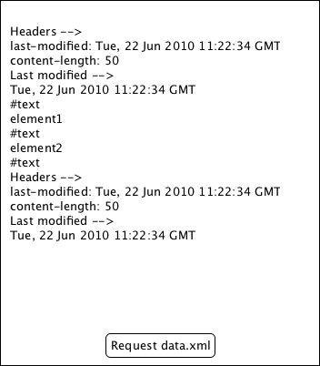

Qt Quick Examples - XMLHttpRequest
This is a collection of XMLHttpRequest examples

XMLHttpRequest contains a small QML example demonstrating Qt QML's XMLHTTPRequest functionality. For more information, visit the section about XMLHttpRequest.
Running the Example
To run the example from Qt Creator, open the Welcome mode and select the example from Examples. For more information, visit Building and Running an Example.
Get data
Get data uses the XMLHttpRequest API to fetch an XML document from a server. It displays the header of the HTTP response and the body of the XML document.
Files: